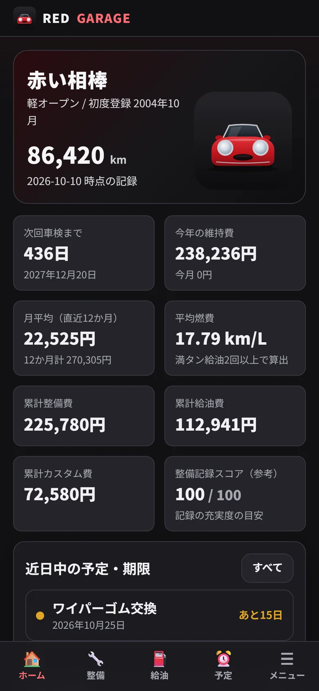
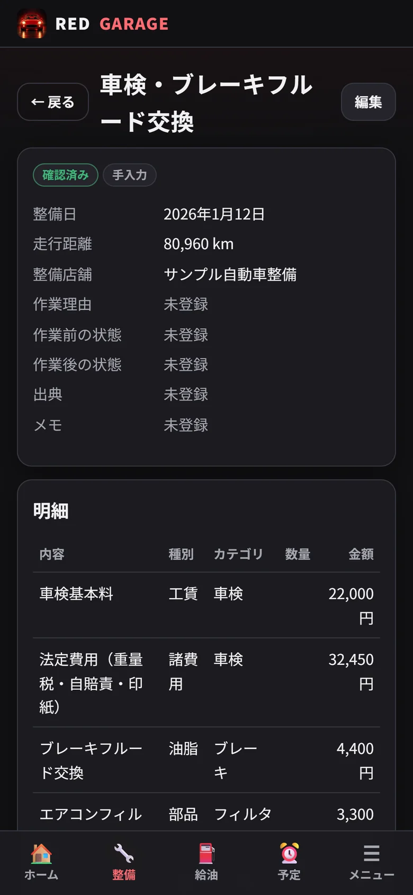
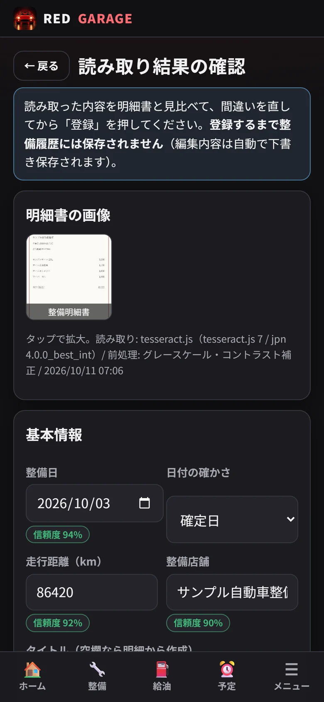
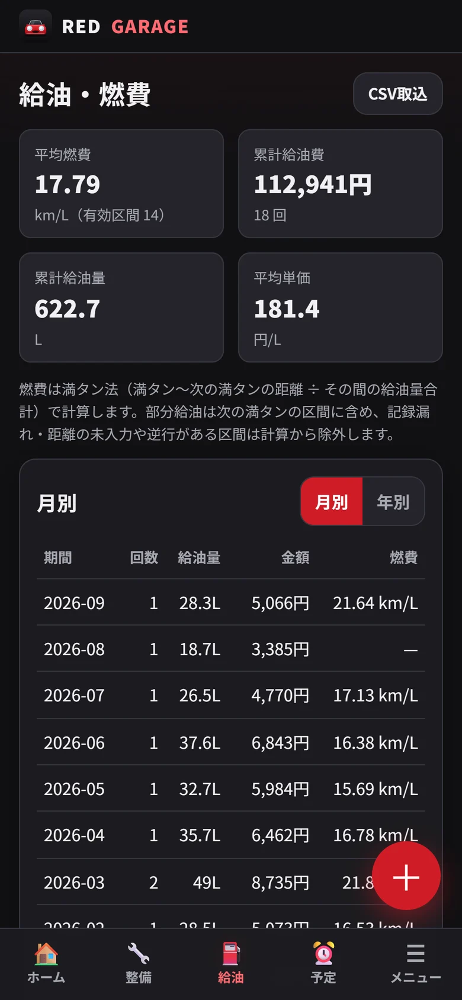
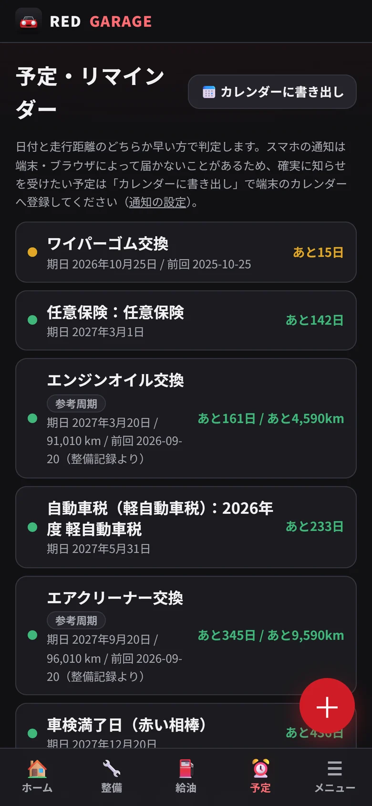
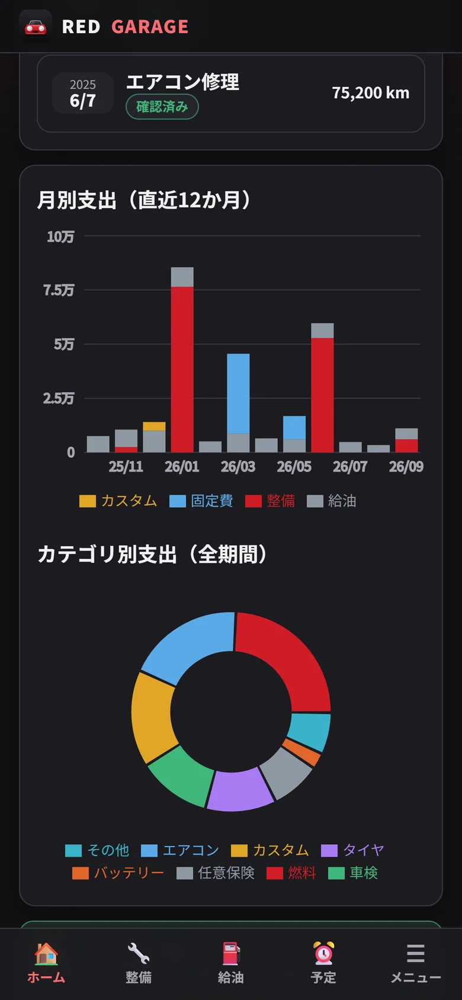
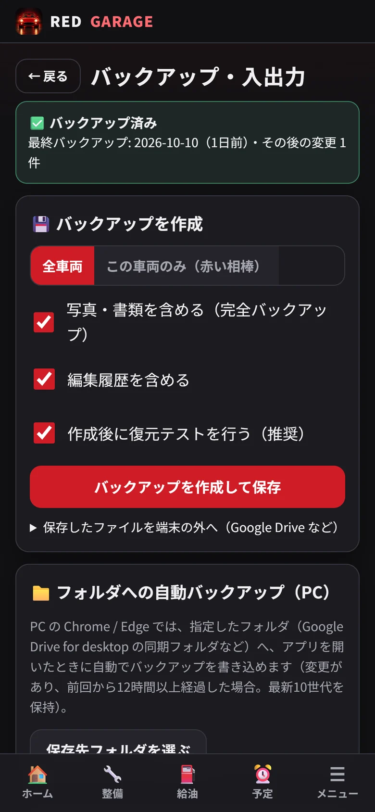

Guide
使い方
はじめての登録から、明細書の読み取り、機種変更まで。5 分で読める操作ガイドです。
はじめる
- スマホでインストール方法のページを開き、「アプリを開く」をタップします。
- ブラウザのメニューから「ホーム画面に追加」（iPhone は共有ボタン →「ホーム画面に追加」）を選びます。
- ホーム画面の赤いクルマのアイコンから起動します。以後はオフラインでも開けます。
ポイント ホーム画面に追加しておくと、ブラウザが記録を消しにくくなり、アプリのように全画面で使えます。

車両を登録する
- 下のメニューの「メニュー」→「車両」を開きます。
- 愛称・メーカー・車種・型式・初度登録などを入力します。わからない項目は空欄のままで大丈夫です。
- 車検満了日は車検証を見て入力しましょう。ダッシュボードに残り日数が表示されます。
- 項目ごとに「確認済み／本人申告／要確認」を選べます。あとで書類と照合したい情報の目印になります。
車検証の二次元コード 車両の画面の「車検証QRを読み取る」から、型式や車台番号の入力を手伝います。読み取った値は必ず車検証と見比べてください。
整備を記録する
- 「整備」を開き、右下の赤い＋ボタンをタップします。
- 整備日・走行距離・店舗を入力します。日付があいまいなときは「頃（概算）」を選べます。
- 明細に、交換した部品や作業を 1 行ずつ追加します。部品名を入れると、カテゴリの候補が表示されます。
- 明細書の合計金額を入力すると、維持費には合計金額だけが数えられ、部品代・工賃と二重に数えられません。
相談や見積もりも残せる 状態を「相談・見積のみ」にすると、維持費やお知らせの計算には含めずに記録だけを残せます。

明細書を読み取る
- 「整備」→「明細書を読取」を開き、「撮影する」で明細書を撮ります。
- 読み取りが終わると確認画面が開きます。信頼度が低い項目や「読み取れず」の項目を重点的に確認します。
- 明細書と見比べて内容を直し、「明細書の原本と内容を照合しました」にチェックして「確認して登録」。
きれいに読み取るコツ 明るい場所で、真上から、影が入らないように。紙のしわを伸ばし、明細書が画面いっぱいに入るように撮ると精度が上がります。
二重登録の防止 同じ画像や、同じ日・同じ金額の整備がすでにあると警告が出ます。元の画像と読み取り内容、修正した箇所はあとから見返せます。

給油と燃費
- 「給油」の＋ボタンから、給油日・走行距離・給油量・金額を入力します。
- 満タンにしたときは「満タン給油」にチェック。燃費は満タンから次の満タンまでの区間で計算します。
- 給油の記録を忘れた回があったら、次の給油で「前回の給油を記録し忘れた」にチェックすると、その区間は燃費の計算から外れます。
CSV の取り込み ほかのアプリで記録していた給油の履歴は、「CSV取込」から列を対応付けて取り込めます。

予定とお知らせ
- 「予定」の「参考周期から追加」で、オイル交換などを一般的な目安の周期で追加できます。周期は自由に変更できます。
- カテゴリを選んでおくと、その整備を記録したときに次回の予定が自動で更新されます。
- 「カレンダーに書き出し」で、スマホのカレンダーに登録できます。確実にお知らせを受けたい車検や保険におすすめです。
ご注意 標準の周期は一般的な目安で、メーカーの正式な整備基準ではありません。取扱説明書や整備工場の指示を優先してください。

維持費を見る
- ダッシュボードで今年の維持費、月平均、累計の整備費・給油費・カスタム費を確認できます。
- 「メニュー」→「維持費の分析」では、年ごと・項目ごとに絞り込んでグラフで見られます。
- 車検の重量税などを整備の明細にも入れた場合は、車検・保険・税金の画面で「整備記録で計上済み」にすると二重に数えません。

バックアップと機種変更
- 「メニュー」→「バックアップ・入出力」→「バックアップを作成して保存」。写真も含めた ZIP ファイルが保存されます（作成後に自動で復元テストも行います）。
- 保存したファイルを、Google Drive などの端末の外にアップロードします（Android: Drive アプリの「＋」→「アップロード」）。
- 新しい端末でアプリを開き、「バックアップから復元・取り込み」でファイルを選ぶと、記録と写真がそのまま戻ります。
月に 1 回がおすすめ しばらくバックアップしていないと、ホーム画面でお知らせします。パソコンでは、指定したフォルダへ自動でバックアップすることもできます。

困ったときは
- 消してしまった → 「メニュー」→「ゴミ箱」から復元できます。
- 書き換えてしまった → 記録の画面の「修正履歴」、または「メニュー」→「編集履歴」から、変更前の内容に戻せます。
- 取り込みや復元をやり直したい → 「バックアップ・入出力」の「内部スナップショット」から、操作の前の状態に戻せます。
- 画面が表示されない → いったんアプリを閉じて開き直してください。記録は削除されません。